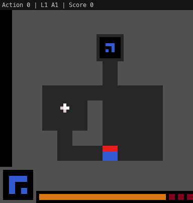
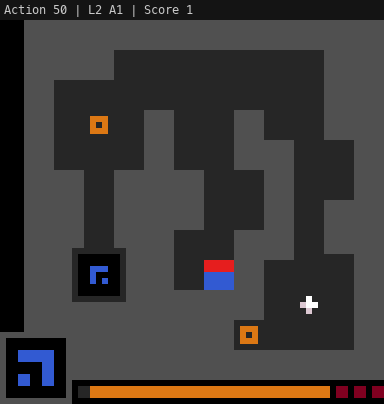

At TrainLoop, we’ve been building an agent to play ARC-3 puzzles—procedurally generated games that require real-time discovery of hidden mechanics. The agent uses GPT-5.2 as its backbone and plays by observing pixel grids, forming theories about how the game works, and issuing action sequences. Over five ablations on a single puzzle (ls20), I iterated on how the agent manages its hypotheses and world model.
Setup
The agent architecture is a loop: observe the game state, analyze it (with Python for grid diffs, flood fills, etc.), form a plan, execute actions, repeat. The puzzle ls20 has at least two levels. Level 1 involves stamp movement, erosion timers, cash-in mechanics, and gate toggling. Level 2 adds tighter time pressure. The agent gets 500 actions total and has to figure everything out from scratch.
Ablation 0: Baseline
No explicit belief management. The agent just analyzes and acts.
Result: 506 actions, score 0, never left Level 1. Four game overs.
The failure mode was hypothesis lock-in. The agent committed early to one theory about platform movement and erosion timing, then never explored alternatives. It never discovered the shape-matching mechanic central to ls20. This is the default behavior of a long-context model doing sequential reasoning: once a narrative forms in the context window, inertia keeps it there.
Ablation 1: Explicit hypothesis management
I added a structured hypothesis registry. Every analyzer response now includes a [HYPOTHESES] section listing each hypothesis with an ID, confidence score, status, evidence for and against, and a test plan. A HypothesisTracker monitors how long the agent stays on one hypothesis without progress and injects a [HYPOTHESIS DIVERSIFICATION REQUIRED] prompt after 30 stale actions.
Result: 500 actions, score 1. Level 1 completed on the second attempt in 114 actions. Level 2 timed out after 244 actions. One game over.
This was the first time the agent solved Level 1. It generated 25+ unique hypotheses (vs. 1–2 in baseline) and the diversification trigger fired four times. The agent explored platform movement, click interactions, gate toggles, shape matching, erosion mechanics, cash-in cycles, and n-block clearing before converging on the correct solution path: stamp controls for 5-cell movement, G erosion timer at 2 columns per action, cash-in when G=0, and a $/8 switch toggling remote gates.
Level 2 failed because the agent spent 244 actions re-discovering mechanics and looping between two hypotheses (H3 and H9) without making progress.

Ablation 2: Shape analysis hints + cross-level transfer
To help with Level 2, I added domain-specific guidance: a shape analysis section with a Python flood-fill example, a cross-level transfer protocol, and a lower diversification threshold (20 actions instead of 30).
Result: 500 actions, score 0. Never completed Level 1. Three game overs. Regression.
This was worse than both the baseline and Ablation 1. The added prompt complexity caused hypothesis thrashing: 50+ hypothesis switches in 500 actions, constant bouncing between H2, H4, and H5. Game overs came at remarkably consistent intervals—actions 139, 134, and 138—suggesting the agent was reliably failing in the same way each time. It never committed to any hypothesis long enough to actually test it.
This confirmed something I’d read in the ARC Prize blog: diminishing and even negative returns from additional hand-engineering. The model performs best with minimal, structural guidance—not domain-specific hints. Prompt complexity is inversely correlated with performance.
Ablation 3: Minimum commitment (killed early)
I reverted the prompt to the clean Ablation 1 version and added a minimum commitment constraint: block hypothesis switches if the current hypothesis has been active for fewer than 10 actions.
Result: Killed at 154 actions, score 0, still on Level 1. The constraint fired once (blocked a switch at 9 actions, allowed at 12). One diversification trigger.
It reduced thrashing but wasn’t enough on its own. I killed it early to try something more fundamental.
Ablation 4: Knowledge model
Complete redesign. Instead of tracking hypotheses, the system now tracks knowledge:
- KNOWN: confirmed mechanics with evidence
- UNKNOWN: open questions to investigate
- EXPLORING: which unknown is currently being targeted
- OBJECTIVE_THEORY: current best theory for how to score
The key principle: actions always target the most promising unknown. When many things are unknown (early game), exploration is naturally broad. As knowledge grows, the agent narrows focus to remaining unknowns. A KnowledgeTracker maintains a high-water mark—knowledge can only grow—and fires a [STALE EXPLORATION] nudge when no new knowledge is gained for 30 actions. Knowledge carries across game overs.
Result: 500 actions, score 1. Level 1 completed on the first attempt in 49 actions. Level 2 timed out after 451 actions with six game overs.
49 actions to solve Level 1 vs. 114 in Ablation 1 and infinity in the baseline. The human baseline for Level 1 is 21 actions, so the agent is within 2.3x of human efficiency. Knowledge grew steadily from 0 to 4 to 7 known items, and only one stale nudge was needed (vs. four diversification triggers in Ablation 1).
Level 2 remained unsolved but revealed a different bottleneck. Game overs came at strikingly regular intervals: 66, 68, 71, 71, 70, 68 actions. This ~70-action cadence suggests a fixed timer per attempt. The agent knows what to do—it has the mechanics mapped—but can’t execute fast enough. Each analyzer cycle consumes 5–10 actions of overhead, and with only ~70 actions per attempt, that leaves just 7–14 actual decision points.

Summary
| Ablation | Approach | Score | L1 actions | Game overs |
|---|---|---|---|---|
| 0 | Baseline (no belief mgmt) | 0 | — | 4 |
| 1 | Hypothesis registry | 1 | 114 (2nd try) | 1 |
| 2 | + shape hints | 0 | — | 3 |
| 3 | Min commitment | 0 | — | — |
| 4 | Knowledge model | 1 | 49 (1st try) | 6 |
What I learned
Explicit belief management matters a lot. The jump from Ablation 0 to 1 is the biggest single improvement. Without it, the model locks into its first plausible narrative and never leaves. A structured registry that forces enumeration of alternatives breaks this default.
Knowledge > hypotheses. Framing the agent’s state as “what do I know and what don’t I know” outperforms “what do I believe and how confident am I.” Hypotheses invite premature commitment to explanations. Knowledge items are monotonic—once confirmed, they stay confirmed—and unknowns give the agent a natural exploration target. This framing reduced Level 1 solve time by 57%.
More prompt engineering makes things worse. Ablation 2 is the cautionary tale. Adding domain hints, worked examples, and transfer protocols degraded performance below baseline. The model has enough capability to discover mechanics on its own; overloading the prompt just causes thrashing. Structural scaffolding (how to organize thinking) helps. Content scaffolding (what to think about) hurts.
The next bottleneck is execution speed, not reasoning. On Level 2, the agent dies to a timer, not to confusion. It knows the mechanics but can’t act on them fast enough within the ~70-action window. The fix is probably longer action plans—letting the agent commit to 20-step sequences instead of 10 when confidence is high—rather than any change to the reasoning layer.